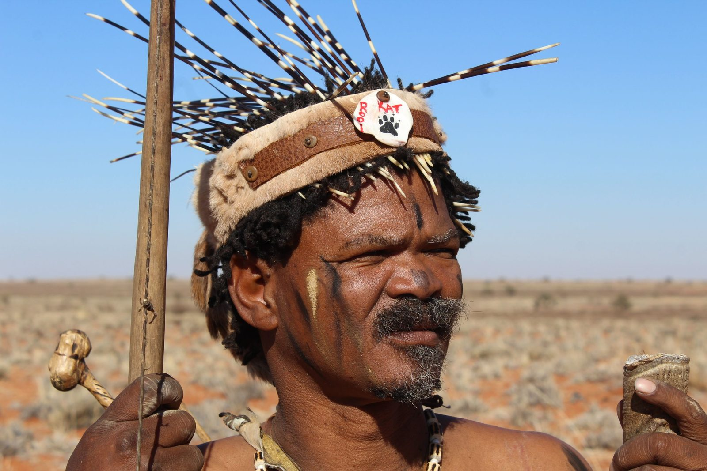
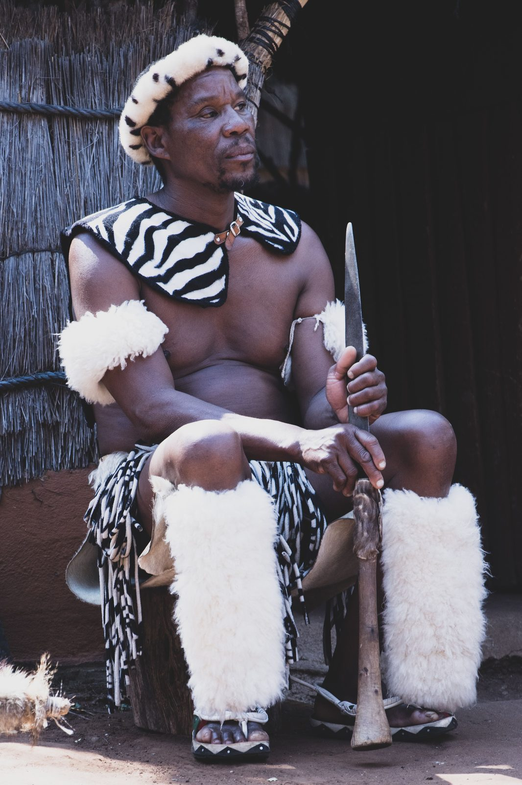
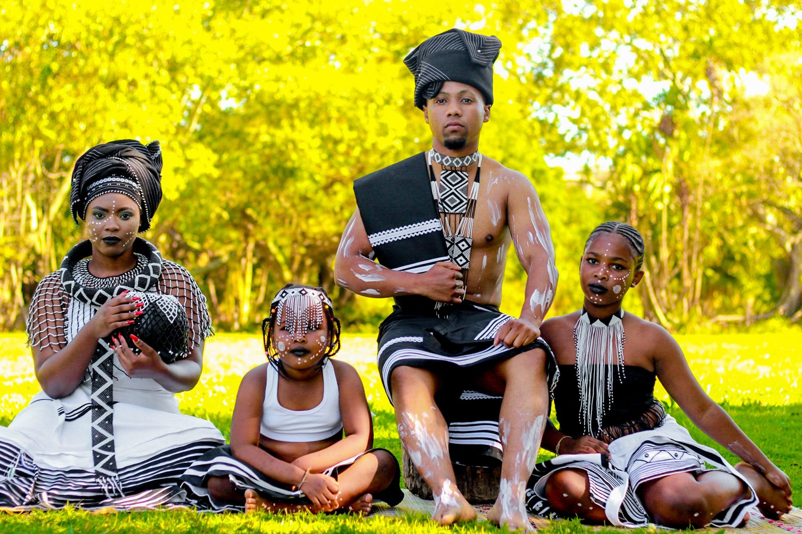
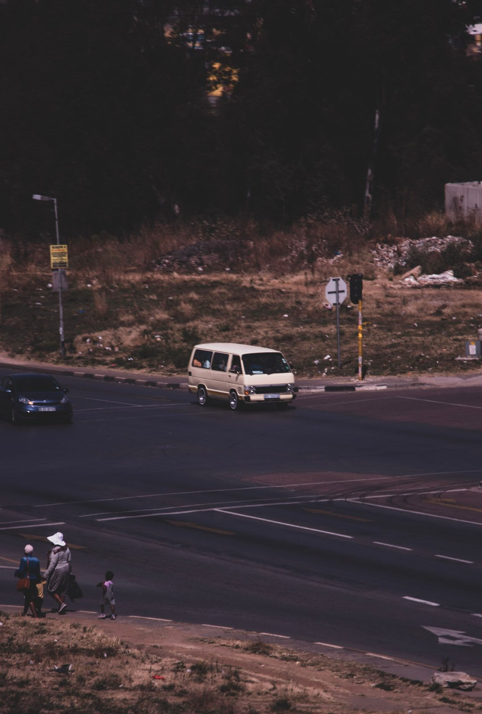
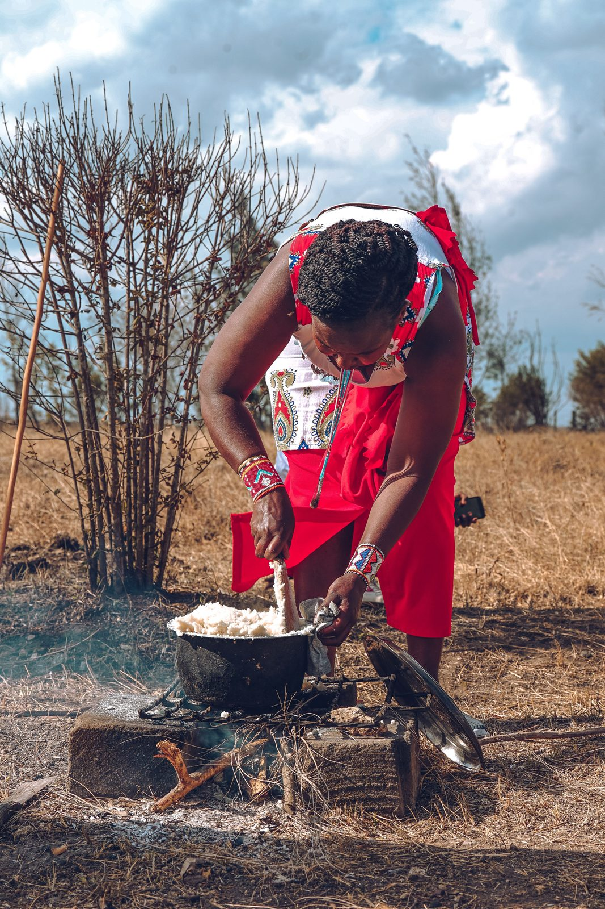
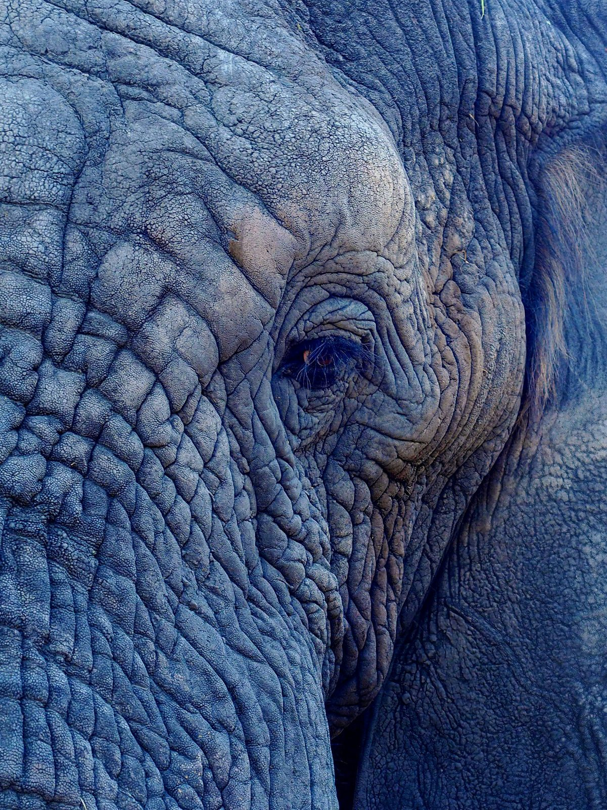
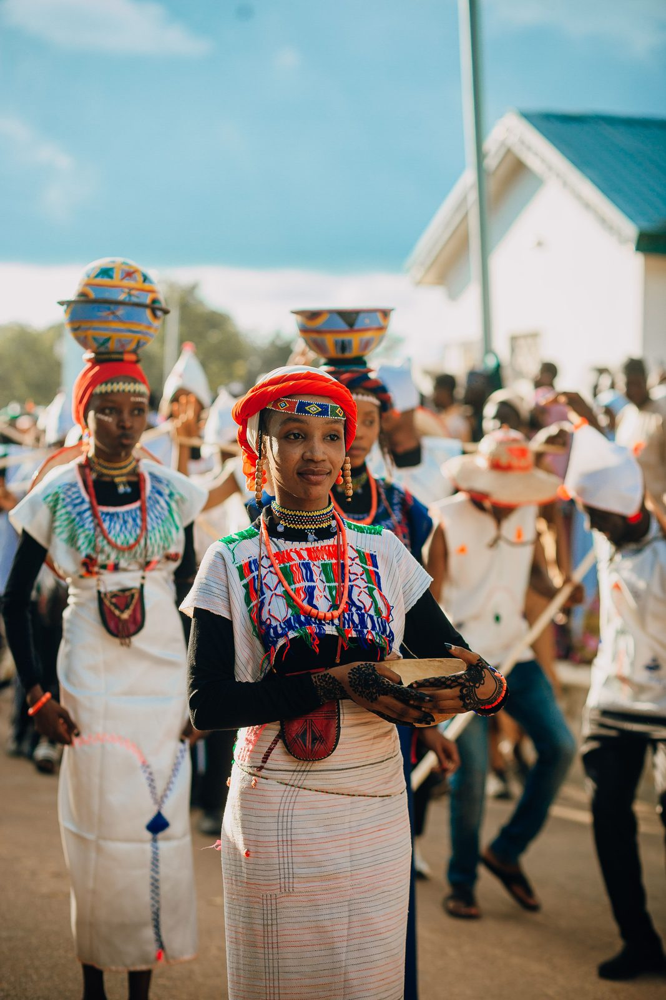

Mhudi
The first English novel by a Black South African — overturning the colonial pastoral myth.


After the Matabele attack scattered the Barolong and destroyed the town of Kunana, Mhudi and Ra-Thaga met as survivors in the wilderness. Far from elders and the obligations of the village, they built a home of their own and named it Re-Nosi — 'We-are-alone.'
AI image — artistic interpretation, not a historical photo.
Source: Plaatje, Mhudi (1930), ch. 5 'The Forest Home' — the sanctuary Re-Nosi.
Community
Archive
Record an elder's story, a memory, or a tradition in your own words. Your voice, your history — kept on your terms.
Before you record
Your story is personal information. Under South Africa's POPIA, your voice is protected — so we only record it with your clear consent. Your recording is saved on this device. You can delete it at any time.
Heritage
Ledger
Every foundational work here is fingerprinted (SHA-256 + IPFS content ID) and anchored on a public blockchain — tamper-evident, permanently verifiable, owned by the community.
Privacy first (POPIA): only public literary works and their hashes are placed on-chain. Community members' personal voice recordings are never put on the blockchain.
The Nine
Provinces
Nine provinces, hundreds of cities and towns — each with its own founders, leaders and living history. Tap a province to explore its famous places.

4 cities
2 cities
2 cities
2 cities
2 citiesSouth Africa's nine provinces were drawn in 1994, at the end of apartheid — but the places within them are far older. The Western Cape's story runs from the Khoikhoi and San of the Cape, through the 1652 Dutch station, the wine-lands and the Overberg, to the cities of today.

In 1652 the Dutch East India Company, under Jan van Riebeeck, set up a refreshment station to resupply ships on the spice route — the first colonial town in southern Africa. It grew at the meeting point, and collision, of Khoikhoi, European, and enslaved Southeast Asian and African peoples — a history still written into the city's languages, food and faiths.
The
Presidents
Since the first free election in 1994, five presidents have led South Africa — each through a different chapter, from liberation to the work still unfinished.
Mandela joined the ANC in 1944 and helped found its Youth League. As apartheid hardened, he co-founded Umkhonto we Sizwe, the movement's armed wing. Convicted at the 1964 Rivonia Trial, he was sentenced to life and spent 27 years in prison — much of it on Robben Island. Released on 11 February 1990, he shared the 1993 Nobel Peace Prize with F.W. de Klerk and, in 1994, became South Africa's first democratically-elected president.